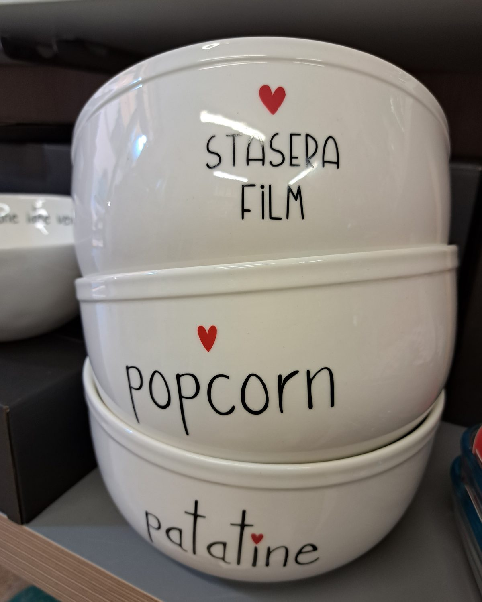
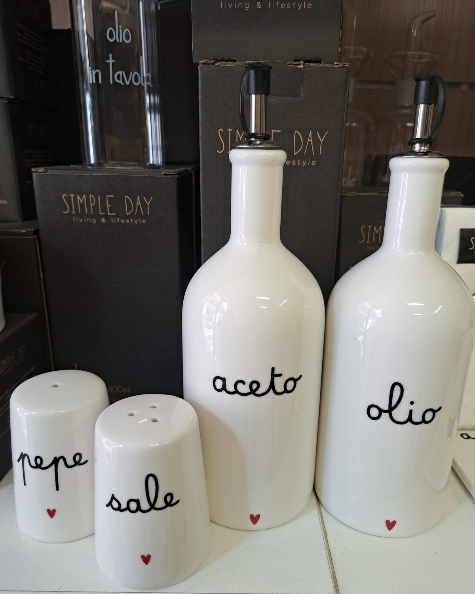
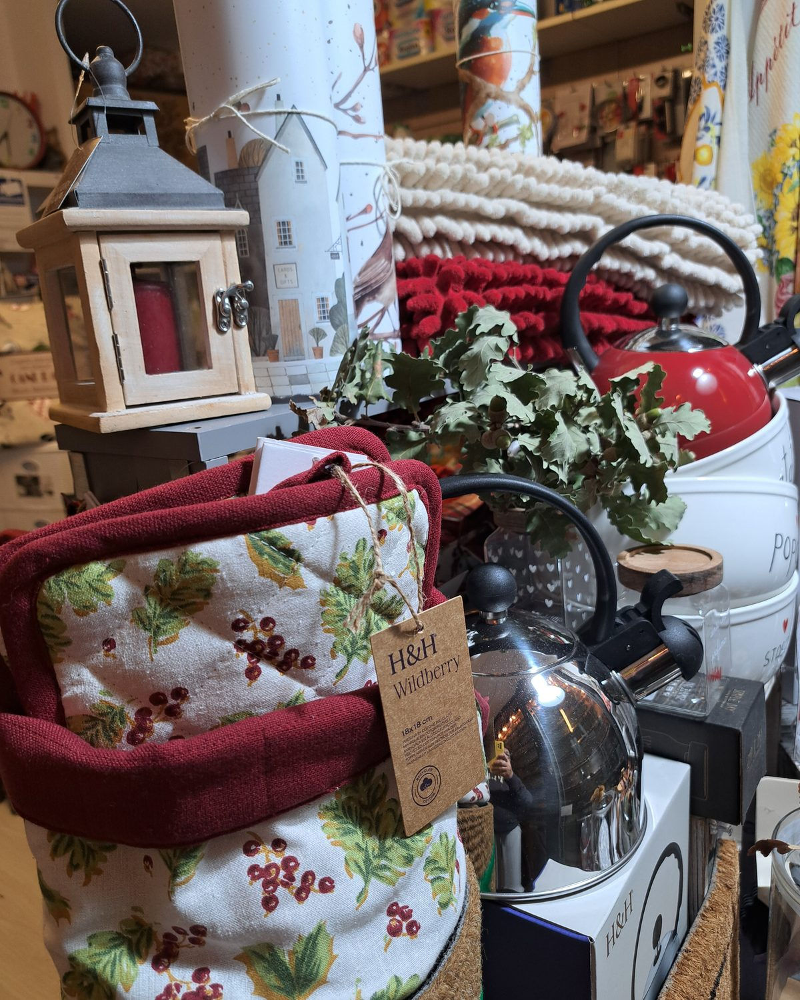
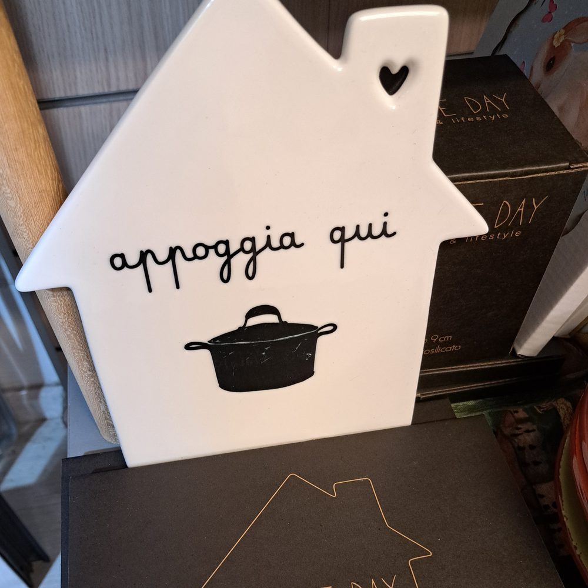
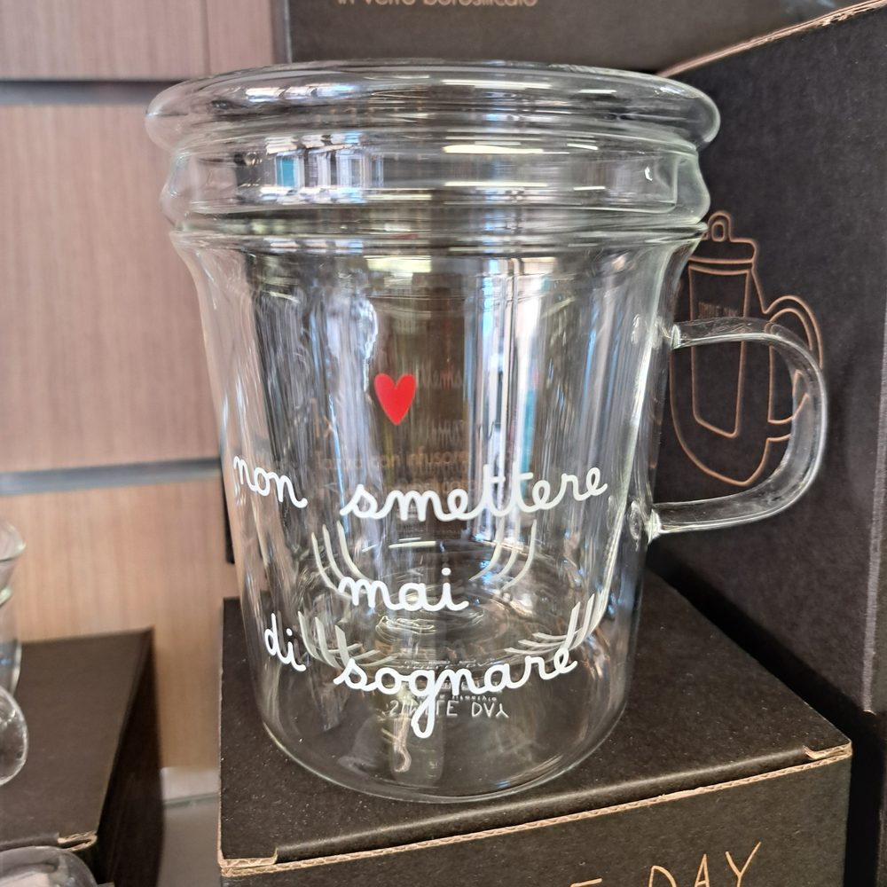

01
Tavola
Piatti, ciotole e bicchieri per tutti i giorni.


02
Cucina
Bollitori, borracce termiche, olio e aceto.


03
Dispensa e vetro
Barattoli, teiere e tazze con frasi a mano.


04
Tessili
Presine, strofinacci e tartan per la cucina.



05
Ingresso
Zerbini e passatoie, da un lato all'altro della porta.


06
Regali e dettagli
Piccoli oggetti con una frase, da regalare.



Simple Day
Ceramiche e vetri con frasi scritte a mano.
H&H
Pentole, bollitori e borracce.

Il negozio. [Testo da approvare] Non è un catalogo: i prodotti si vedono dal vivo. Chiedi a Netta.
Dove siamo
[Indirizzo da confermare], Firenze
Lun–ven 9–13 · 16:30–19:30 · sab 9–13
(orari dal cartello, da confermare)
Mappa (blocco mappa SuperSite)